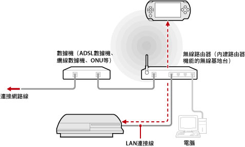
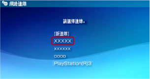

網路 > 如何遙控遊玩（經由無線基地台）
如何遙控遊玩（經由無線基地台）
使用LAN連接線讓PS3™跟無線基地台連線後，使用PSP™的無線LAN機能，經由無線基地台與PS3™連線。
一般的設置範例

提示
- 無線路由器是一種讓無線基地台搭載路由器機能的裝置。無線基地台（亦稱存取點）是能無線跟網路連線的裝置，而路由器（Router）乃是能讓數種裝置同時與同一條網路線連線的裝置。
- 部分數據機亦可能搭載了路由器機能。請讓PS3™與搭載路由器機能的裝置連線。
- 無線基地台跟數據機皆搭載路由器機能時，請關閉其他一台的路由器機能。PS3™和PSP™需使用相同網路連線。若使用兩台以上的路由器，PS3™和PSP™可能會分別連接不同的網路，並無法遙控遊玩。
事前準備（PS3™與PSP™）
首度使用遙控遊玩時，需先將PSP™登錄（配置）至PS3™。請選擇 （設定）＞
（設定）＞ （遙控遊玩設定）＞［登錄裝置］進行設定。
（遙控遊玩設定）＞［登錄裝置］進行設定。
事前準備（PSP™）
新建PSP™能與無線基地台連線的網路連線。使用遙控遊玩時，若要經由正在利用的無線基地台，則不需新建網路連線。如何建立網路連線的詳細說明，請參閱PSP™的用戶指南。
開始遙控遊玩
1. |
操作PS3™，選擇 |
|---|---|
2. |
操作PSP™，選擇 |
3. |
選擇［家庭內連線］。 |
4. |
從連線清單中選擇遙控遊玩時要使用的無線基地台。  連線成功後，PSP™的螢幕中會顯示PS3™的畫面。 |
 （網路）的
（網路）的 （遙控遊玩）。
（遙控遊玩）。 （遙控遊玩）。
（遙控遊玩）。提示
- 只能在PS3™可接收電波範圍內使用遙控遊玩。
- 若啟用PS3™的遙控啟動，即可在遙控遊玩時自動開啟已進入預備狀態的PS3™主機的電源(Wake On LAN)。在此情況下，無需進行步驟1。詳細請參閱（設定）＞（遙控遊玩設定）＞［遙控啟動］。
結束遙控遊玩
按下PSP™的PS按鈕（HOME（歸返）按鈕），選擇［結束遙控遊玩］＞［結束並關閉PS3™的電源］。
提示
當進行檔案的複製、底層下載等，需透過PS3™操作而不想關閉PS3™的電源時，請選擇［結束但不關閉PS3™的電源］。